A better generator within a small memory budget
What we tried, what failed, and what the compressed Inko candidate actually demonstrates.
The problem and the outcome
Supra2 fit the existing Pi pipeline but often produced weak scenes and pseudo-lettering. Original Inko produced more recognizable pictures, but its BF16 generator, text encoder and VAE together contained about 2394.6 MiB of parameters before activations. The target Pi has about 920 MiB RAM.
The successful route keeps Inko’s dense 532M generator and reduces weight residency, model evaluations and decoder cost. It combines packed mixed 4/8-bit weights, a separately staged text encoder, eight-pass trajectory distillation and a newly trained tiny decoder. It is a research candidate rather than a demonstrated Pi deployment.
What we tried
| Experiment | What happened | Decision |
|---|---|---|
| Direct Supra weight edits | Removed selected typography-related conditioning directions at two ranks and strengths. No convincing scene-quality or lettering benefit. | Rejected hypothesis |
| Inko quantization | Compared all-4-bit, 8-bit modulation and groupwise activation-aware error compensation. Calibration used actual development trajectories. | Keep mixed 4/8-bit |
| Portable CPU runtime | NumPy/NCNN math, mapped weights, one dequantized matrix at a time and fresh sequential processes. No Torch, Transformers or Diffusers loaded. | Working on laptop |
| Exact original decoder | Specialized causal one-frame Qwen decoding to 2D, with exact local halos and full global attention. About 25.3M parameters / 48.3 MiB storage. | Quality fallback |
| Dense trajectory distillation | 344 teacher trajectories; 3000 rank-32 adapter updates. Teacher: 24 steps / CFG 4.5. Student: 8 steps / CFG 1. | Selected checkpoint |
| Physical pruning and recovery | 13 of 25 blocks, MLP width 2048 instead of 3072, 244M parameters. Images remained unacceptable after 6000 recovery updates. | Rejected model |
| Train a tiny Qwen decoder | 16-channel TAESD-derived decoder, all weights fine-tuned for 6000 updates. 1.229M parameters; 25.05 dB PSNR / 0.7996 SSIM on 32 validation images. | Selected, visibly lossy |
| Additional CFG | Same student tested at 1, 2, 3 and 4.5. Extra guidance strengthens color/contrast, with mixed preferences and persistent coherence faults. | Default unchanged |
Images: the useful gain and the remaining failures
All eight exact evaluation captions and both seeds are shown below. Their subject families appear in synthetic training captions, so this is not an out-of-domain benchmark. Supra uses 256px / 25 steps / CFG 3; original and quantized guided Inko use 384px / 20 steps / CFG 4.5; both students use 384px / 8 steps / CFG 1. Seeds do not imply identical noise across architectures.
The fast candidate often keeps recognizable compositions. It loses some texture and color relative to guided Inko. The exact-vs-tiny student columns isolate the decoder substitution: softness is not solely a CFG issue. Wrong subjects, bad anatomy, duplicated people and pseudo-text remain; the spacecraft/robot confusion is visible even in the original model.
Seed 0 — 8 captions
| Caption | Supra2 | Original Inko · BF16 | Inko · quantized | Student · exact decoder | Student · tiny decoder |
|---|---|---|---|---|---|
| A damaged bridge over a river, workers inspecting its broken roadway. oil painting | 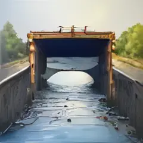 | 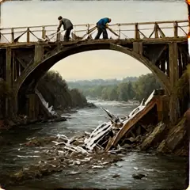 | 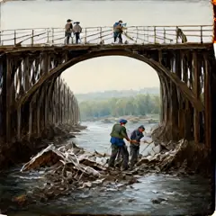 | 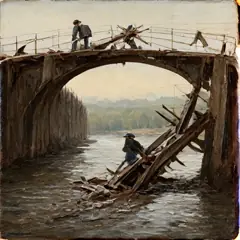 | 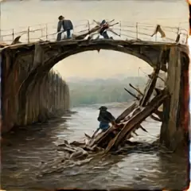 |
| A swimmer beside a small sailboat on a sunlit sea. oil painting | 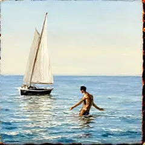 | 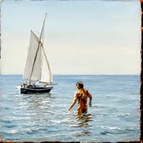 | 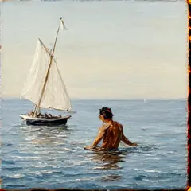 | 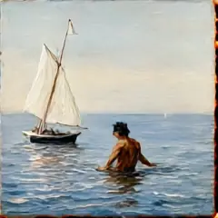 | |
| A farmer harvesting golden wheat with a red tractor. oil painting | 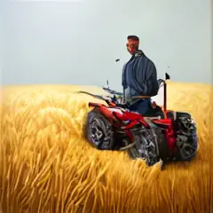 | 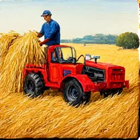 | 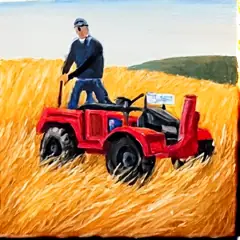 | 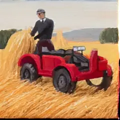 | 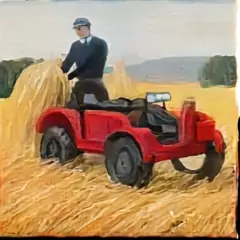 |
| Penguins standing on a cracked iceberg in the Antarctic ocean. oil painting | 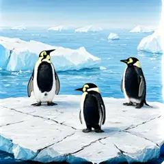 | 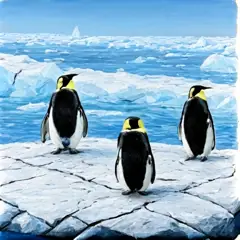 | 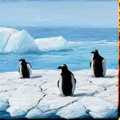 | 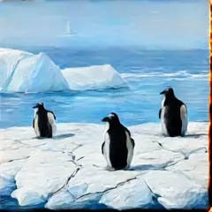 | |
| A bride and groom standing together in a garden, white wedding dress and dark suit. oil painting | 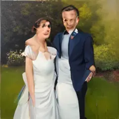 | 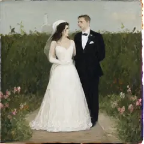 | |||
| A basketball player in a red jersey jumping toward a hoop in a crowded arena. oil painting | 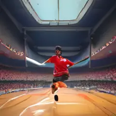 | 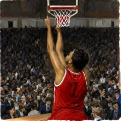 | 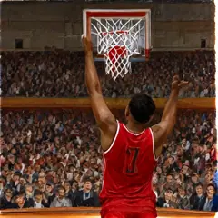 | 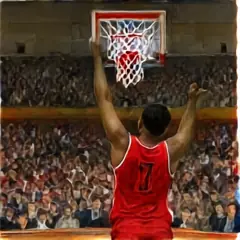 | |
| Firefighters spraying water on a burning forest, orange flames behind pine trees. oil painting | 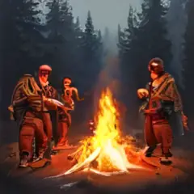 | 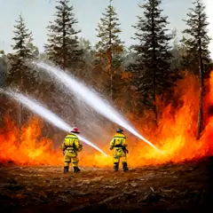 | 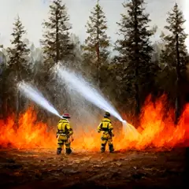 | 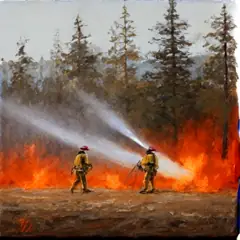 | 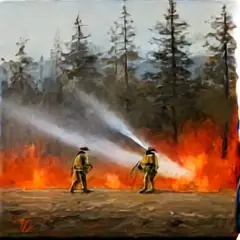 |
| A robotic spacecraft with solar panels orbiting the planet Mercury. oil painting | 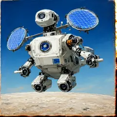 | 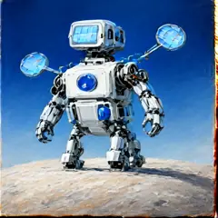 | 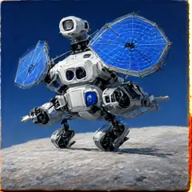 | 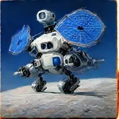 |


Seed 1 — 8 captions
| Caption | Supra2 | Original Inko · BF16 | Inko · quantized | Student · exact decoder | Student · tiny decoder |
|---|---|---|---|---|---|
| A damaged bridge over a river, workers inspecting its broken roadway. oil painting | 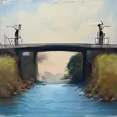 | 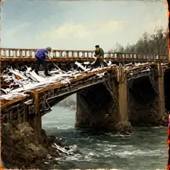 | 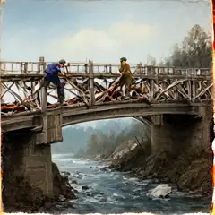 | 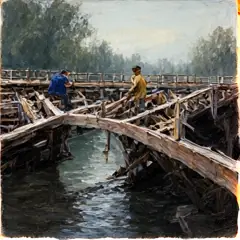 | 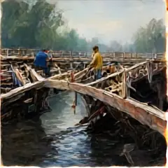 |
| A swimmer beside a small sailboat on a sunlit sea. oil painting | 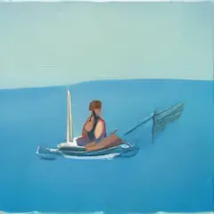 | 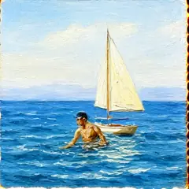 | 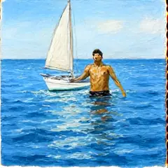 | 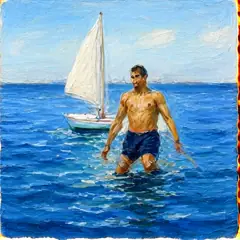 | 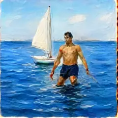 |
| A farmer harvesting golden wheat with a red tractor. oil painting | 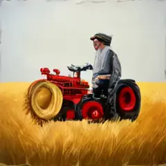 | 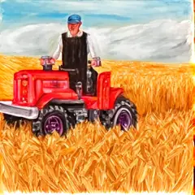 | 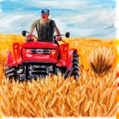 | 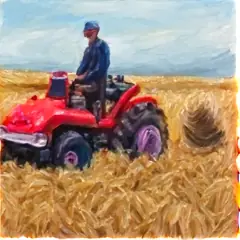 | 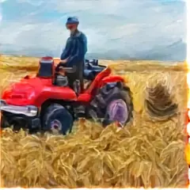 |
| Penguins standing on a cracked iceberg in the Antarctic ocean. oil painting | 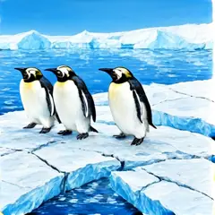 | 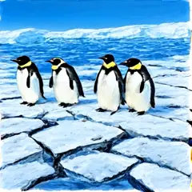 | |||
| A bride and groom standing together in a garden, white wedding dress and dark suit. oil painting | |||||
| A basketball player in a red jersey jumping toward a hoop in a crowded arena. oil painting | |||||
| Firefighters spraying water on a burning forest, orange flames behind pine trees. oil painting | |||||
| A robotic spacecraft with solar panels orbiting the planet Mercury. oil painting |


Training diagnostics
Runtime, memory and numerical checks
The standalone 384px CFG-1 bundle completed in 45.92 s: text 127.3 MiB, sampling 212.3 MiB and decoding 248.1 MiB peak RSS. CFG 2 took 94.52 s with a similar largest child peak. The final 512px run completed in about 78 s, with 277.2 MiB sampling and 397.0 MiB decoding RSS.
Portable transformer output matched an independently generated FP32 fixture to about 1.97×10⁻⁶ relative RMSE at 384px. Exact-decoder bounded validation covered 256, 384 and 512px; its FP16 storage introduces small numerical differences. The application’s 15 tests and research suite’s 27 tests passed at the model handoff. Numeric parity proves implementation agreement, not aesthetic quality or Pi performance.
Failures that changed the implementation
- Initial decoder exports exceeded the allocation limit. Fused normalization, split graphs, complete local halos and fewer copies bounded their workspaces.
- NCNN residual operations required an owned input tensor; borrowing NumPy storage caused a crash in that decoder path.
- Unused NumPy BLAS threads reserved enough virtual data to interfere with RLIMIT_DATA. NCNN keeps four threads; the unused BLAS pool is limited to one.
- An inference-mode RoPE cache interrupted dense training after checkpoint 1500. The cache was fixed and regression-tested. Training resumed with a fresh optimizer at LR 5×10⁻⁵, after initial LR 10⁻⁴; this discontinuity is recorded.
- The first final-checkpoint 512px trial failed on sampling pass four. Bounding NCNN transposed-weight packing to 2048 output rows fixed the observed allocation failure without changing numerical agreement.
CFG feedback: no universal winner
Drew’s informal visual preference was approximately 60% for CFG 2 and 40% for CFG 1. This was not a formal scored evaluation and no denominator was supplied. CFG 1.5 was suggested as a compromise; it has not been tested. No sampling settings, model weights or bundle defaults were changed in response.
Guidance and steps are independent controls. At eight steps our sequential runtime uses eight transformer evaluations for CFG 1 and sixteen for any tested CFG above 1. Going from CFG 2 to 4.5 changes the mixture strength, not the evaluation count. The student already tries to imitate a CFG-4.5 teacher, and its empty-prompt output was not explicitly trained in the distillation objective.
Seed 0 — 8 captions


Seed 1 — 8 captions


Cleanup and retained evidence
The cleanup recovered 30.96 GiB by removing superseded bundles, regenerable export scratch, intermediate merged checkpoints and older optimizer states. Dense checkpoint merges remain reconstructable from the retained adapters and original base model. All 117 loose experiment logs were compressed into one checksum-verified local archive.
Original downloads, production/deployment evidence, current bundles and archives, final dense and rejected-model checkpoints, latest resume states, captions, trajectories, images, metrics and the Supra edit tensor were kept. Model weights, raw logs and large artifacts remain excluded from Git. The complete local deletion inventory is artifacts/edge-quality/cleanup-2026-11-26.json; the compact committed summary is here.
What remains before production
Run an isolated complete-image trial on the actual ARMv7 Pi, with its real NCNN/NumPy/regex packages, system memory pressure, storage speed and power supply. Measure completed latency and inspect the output before integrating the backend into the worker. Verify services and HDMI after an authorized deployment through the production branch. More coherence work and a broader independent evaluation remain useful regardless of hardware fit.